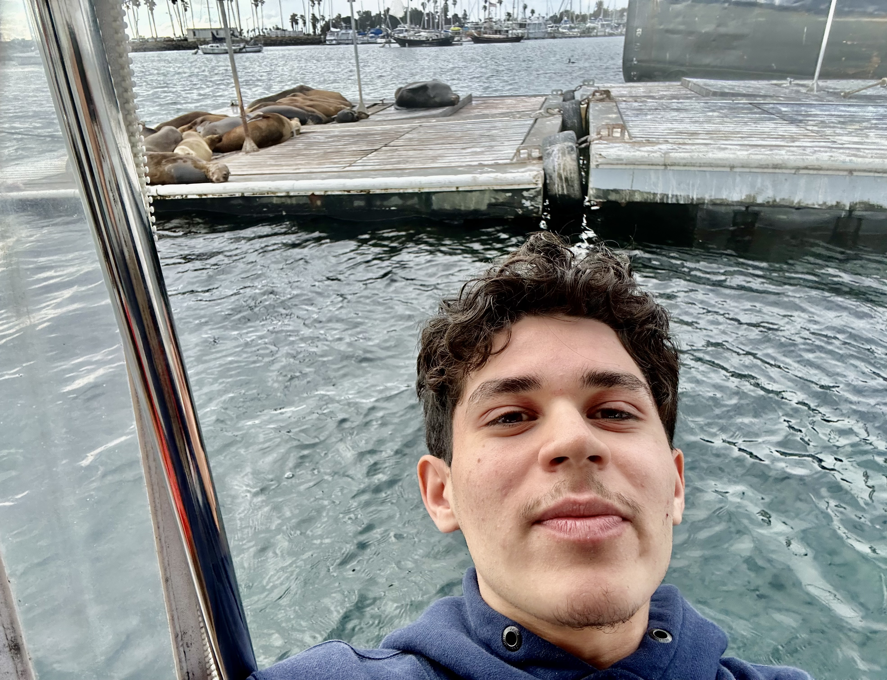

Gustavo Garcia
I'm an Electrical Engineering undergraduate in my 2nd year at UC San Diego specializing in Machine Learning and Controls. I lead the engineering efforts at Triton Droids with a focus on Physical AI.
At triton droids, we particpate in various robotics competitions and research projects, including competition based humanoid robotic soccer and mixed martial arts.
I am interested in robot learning through vison language action models, reinforcement learning, and the emerging field of world models. I am excited to get involved with research and build my technical skills.
For fun I like to play basketball, listen to jazz, and shoot some pool.
Skills & Tools
Python
C++
LeRobot
HuggingFace
Git
Linux / Ubuntu
Mujoco
Reinforcement Learning
Machine Learning
Onshape
EagleCAD